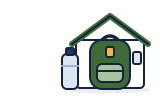

Pieredze ir augstākā vērtība.
Jauns apvārsnis katru dienu
Orizo Labs ir izglītības uzņēmums no Ukrainas. Mēs veidojam mācību lietotnes, kas palīdz cilvēkiem droši dzīvot jaunā realitātē: sākt runāt jaunā valstī, sagatavoties krīzei, apgūt jaunu darbu.
- Bez maksas uz visiem laikiem
- Daudzās valodās
- Darbojas bez interneta

- 3
- produkti vienā platformā: valodas, gatavība, dienests
- 7
- valodas: no ukraiņu līdz igauņu
- 146
- civilās gatavības nodarbības 23 kursos
- 29
- scenāriji „ko darīt, ja…”, lai iepriekš izmēģinātu lēmumus
Virzieni un produkti
Orizo ir viens projekts ar trim virzieniem: valodas dzīvei, gatavība un drošība, kā arī veselība. Katrs produkts risina vienu lielu uzdevumu un kalpo kopīgai misijai.
2000 frāzes
Angļu, poļu, vācu un spāņu valoda ukraiņiem ārzemēs. Gatavas frāzes ārsta apmeklējumam, darbam, dokumentiem un ikdienai, ar padomiem ukraiņu valodā.

Gatavības akadēmija
Civilā sagatavotība, balstīta uz Ukrainas pieredzi: trauksmes un patvertnes, pirmā palīdzība, orientēšanās, psiholoģiskā noturība, dabas katastrofas. Kursi ar eksāmeniem un personīgais gatavības plāns.
Dienesta akadēmija
Raksti, grāmatas un videokursi no instruktoriem praktiķiem karavīriem, rezervistiem un veterāniem. Eksāmeni un sertifikāti.
Jauns virziens
Pirmā palīdzība, psiholoģiskā noturība un veselība pēc dienesta: bezmaksas kursi pēc tiem pašiem Orizo principiem.
Tas, kas glābj dzīvības, — ikvienam
Mūsu misija: zināšanas, kas sargā dzīvību un veselību, — bez maksas, daudzās valodās, ikvienam.
Bez maksas uz visiem laikiem
Pamatzināšanas par drošību, pirmo palīdzību un rīcību krīzē nekad nebūs par maksu.
Daudzās valodās
Tulkojam zināšanas to cilvēku valodās, kam tās vajadzīgas: vietne jau darbojas 7 valodās, un lietotnēs valodu kļūst arvien vairāk.
Darbojas bez interneta
Krīzes režīms un svarīgākās instrukcijas ir pieejamas bezsaistē — tieši tad, kad sakaru nav.
Profesionāļu komanda
Orizo Labs ir speciālistu, nevis tikai izstrādātāju komanda. Katru produktu veido cilvēki, kas savu darbu pārzina no prakses, arī starptautiskā līmenī.
Metodiķi
Pārvērš pieredzi saprotamās nodarbībās: kursa struktūra, testi, scenāriji, eksāmeni un sertifikāti.
Instruktori praktiķi
Māca cilvēkus klātienē un pārbauda, vai katrs padoms darbojas reālā situācijā.
Veterāni ar starptautisku pieredzi
Ilggadējs dienests un darbs augstā starptautiskā līmenī ir gatavības kursu un „Dienesta akadēmijas” pamats.
Produkts un tehnoloģijas
Uzņēmēji un izstrādātāji, kas nogādā zināšanas cilvēka telefonā: ātri, bezsaistē un daudzās valodās.
Kā top kurss
Katra nodarbība iziet ceļu no reālas pieredzes līdz pārbaudītām zināšanām.
- 1
Pieredze
Reālas situācijas no Ukrainas, dienesta un dzīves ārzemēs
- 2
Metodika
Metodiķi veido nodarbības, testus un scenārijus
- 3
Pārbaude
Instruktori un veterāni analizē katru padomu
- 4
Testēšana
Kursu izmēģina testa lietotāji, un mēs to uzlabojam pēc viņu atsauksmēm
- 5
Sertifikāts
Eksāmens apliecina zināšanas, sertifikāts — rezultātu
Dzimis no Ukrainas pieredzes
Kopš 2022. gada miljoniem ukraiņu dažu nedēļu laikā nonāca jaunā valstī, nezinot valodu, bet gaisa trauksmes, elektrības atslēgumi un patvertnes kļuva par ikdienu. Mēs redzējām, cik daudz nozīmē vienkāršas zināšanas: ko pateikt ārstam, kā apturēt asiņošanu, ko ielikt ārkārtas somā.
Orizo Labs pārvērš šo pieredzi mācību lietotnēs — ukraiņiem un ikvienam, kurš vēlas būt gatavs. Mūsu mērķis: lai katram cilvēkam būtu zināšanas, ar kurām jaunā realitāte nebiedē.
Lielākā vērtība dzīvē ir pieredze. Mēs to apkopojam un nododam tālāk profesionāli.
Pieredze
Mācām tikai to, ko pārbaudījusi dzīve: Ukrainas realitāte, dienests, darbs ārzemēs. Dārgi samaksātai pieredzei jāsargā citi.
Profesionalitāte
Būt profesionālim nozīmē atbildēt par katru vārdu nodarbībā. Saturu pārbauda tie, kas to darījuši praksē, nevis tikai lasījuši par to.
Atbildība
Zināšanas, kas glābj dzīvības, ir bezmaksas. Mēs cienām cilvēku laiku, naudu un privātumu un runājam ar viņiem godīgi.
Organizācijām
Mūsu produkti der arī grupām: mēs nodrošinām piekļuvi komandām, skolēniem un kopienām un palīdzam redzēt rezultātus.
Darba devējiem
Valodas apmācība darbiniekiem no Ukrainas: frāzes darbam, drošībai objektā un ikdienai.
Skolām un kopienām
Civilās gatavības kursi klasēm, brīvprātīgajiem un iedzīvotājiem, ar eksāmeniem un sertifikātiem.
Integrācijas programmām
Piekļuves paketes nevalstiskajām organizācijām un valsts programmām, kas atbalsta pārcēlušos cilvēkus.
Veterānu organizācijām
Mācības veterāniem un jauna loma viņiem: kļūt par Orizo instruktoru vai kursu autoru.
Attīstības virzieni
Mēs ejam no cilvēka steidzamākajām vajadzībām jaunā situācijā uz padziļinātu sagatavotību un darbu.
- Tagad
Valodas dzīvei
„2000 frāzes”: četras valodas, līmeņi A1–B2, lasāmgrāmata, „Militārā angļu valoda”.
- Tagad
Gatavība un drošība
„Gatavības akadēmija”: astoņas zināšanu jomas, kursi, scenāriji, krīzes režīms.
- 2027
Profesionālā sagatavotība
„Dienesta akadēmija”: raksti, grāmatas un video kursi no praktiķiem instruktoriem karavīriem, rezervistiem un veterāniem.
- 2027
Valodas darbam
Kursi konkrētām profesijām: būvniecība, aprūpe un medicīna, loģistika, viesmīlība, IT.
- 2028
Iejušanās
Soli pa solim ceļveži par dokumentiem, banku, ārstu, īri un skolu konkrētā valstī.
- 2028
Veselība
Pirmās palīdzības, psiholoģiskās noturības un atveseļošanās pēc dienesta kursi.
Partneriem un investoriem
Meklējam darba devējus, skolas, nevalstiskās un veterānu organizācijas un integrācijas programmas, lai piekļuvi saņemtu tie, kam tā vajadzīga visvairāk. Esam atvērti sarunām ar investoriem.